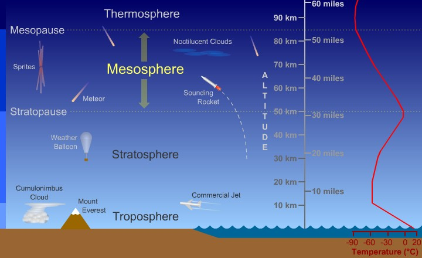

Troposphere - 0 to 12 km -
Contains 75%
of the gases in the atmosphere. This is where you live and
where weather occurs. As height increases, temperature decreases. The
temperature drops about 6.5 degrees Celsius for every kilometer above
the earth's surface.
- Tropopause - located at the top of the troposhere. The temperature remains fairly constant here.
This layer separates the troposphere from the stratosphere
Stratosphere - 12 to 50 km - in the lower part of the stratosphere. The temperature remains fairly
constant (-60 degrees Celsius). This layer contains the ozone layer. Ozone acts as a shield for
in the earth's surface. It absorbs ultraviolet radiation from the sun. This causes a temperature increase
in the upper part of the layer.
Mesophere - 50 to 80 km - in
the lower part of the stratosphere. The temperature drops in this layer
to about -100 degrees Celsius. This is the coldest region of the
atmosphere. This layer protects the earth
from meteoroids. They burn up in this area.
Thermosphere - 80 km and up - The air is very thin. Thermosphere means "heat sphere". The
temperature is very high in this layer because ultraviolet radiation is turned into heat. Temperatures often
reach 2000 degrees Celsius or more. This Layer Contains :
Ionosphere - This is the
lower part of the thermosphere. It extends from about 80 to 550 km.
Gas
particles absorb ultraviolet and X-ray radiation from the sun. The
particles of gas become electrically charged (ions). Radio waves are
bounced off the ions and reflect waves back to earth. This generally
helps
radio communication. However, solar flares can increase the number of
ions and can interfere with the
transmission of some radio waves.
Exosphere - the upper part of the thermosphere. It extends from about 550 km for thousands of
kilometers. Air is very thin here. This is the area where satellites orbit the earth.
Designed By Samuel Gerorge Mounir.
Codded By Zeyad Ahmed Mahmoud.
All Right Reserved ©
Supervised by Mrs.Gehan Samir, Science Teacher.